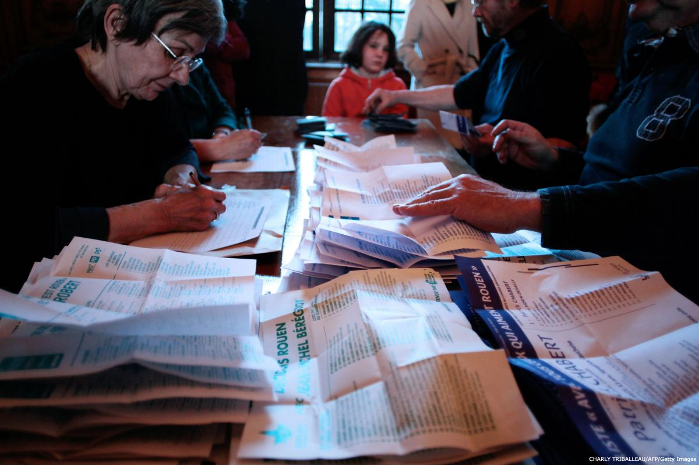

شهروندان غیرحزبی ناظر و دیدهبان انتخابات
نظارت غیرحزبی بر انتخابات و دیدهبانی سازمانهای شهروندمدار به طور فزایندهای در سراسر جهان به عنوان روش استانداردی برای حمایت و محافظت از تمامیت انتخابات، تقویت اعتماد عمومی در انتخابات دموکراتیک و کاهش زمینههای تخلفات انتخاباتی پذیرفته میشود. حکومتها، شامل بدنههای مدیریتی انتخابات، کسانی که در تلاشند تا انتخاب شوند و دیگر ذینفعان انتخاباتی متوجه شدهاند که نظارت غیرحزبی بر انتخابات و دیدهبانی سازمانهای شهروندمدار جزئی جداییناپذیر از اِعمال حق شهروندان بر مشارکت در حاکمیت و امور عمومی است، که یک حق بشری شناخته شده بینالمللی است. ارگانهای بیندولتی، منشورها، اعلامیهها و سایر اسناد متعددی به نظارت غیرحزبی بر انتخابات و دیدهبانی سازمانهای شهروندمدار اشاره داشتهاند.
هدف نظارت و دیدهبانی غیرحزبی بر انتخابات کمک به محافظت از تمامیت روند انتخابات، از طریق مشاهده و گزارش دقیق و بیطرفانه بر هر یک از جوانب این روند و ارزیابی این امر است که آیا این انتخابات در یک روند باز و شفاف، مطابق با قانون اساسی ملی، قوانین و مقررات انتخاباتی، مفاد توافقنامهها و دیگر تعهدات بینالمللی مربوط به انتخابات انجام گرفته است یا خیر. نظارت غیرحزبی بر انتخابات و دیدهبانی سازمانهای شهروندمدار همچنین در پی آن است تا از تمامیت روند انتخابات از طریق دعوت از همه بازیگران انتخاباتی (از جمله نامزدها، احزاب سیاسی، موافقان و مخالفان همهپرسی، مقامات انتخاباتی، دیگر مسئولان حکومتی، رسانههای جمعی و رأیدهندگان) به محترم شمردن قوانین و حقوق انتخاباتی تمامی شهروندان و پاسخگو نگه داشتن آنان که قانون یا حقوق انتخاباتی افراد را نقض کردهاند، پاسداری کند. به علاوه، نظارت غیرحزبی بر انتخابات و دیدهبانی سازمانهای شهروندمدار بر آن است تا شهروندان را برای اعمال حق خود بر مشارکت در امور عمومی به عنوان ناظران و دیدهبانان غیرحزبی انتخابات بسیج کند و مشارکت گستردهتر شهروندان را در انتخابات و مسائل سیاسی تقویت کند.

در کنار حقوق به رسمت شناخته شده برای نظارت غیرحزبی بر انتخابات و دیدهبانی سازمانهای شهروندمدار، مسئولیتهایی هم متوجه آن است. این مسئولیتها در آییننامه اجرایی برشمرده خواهند شد تا در کنار تعهد بر غیرحزبی بودن، توسط تمامی سازمانهای نظارتی و دیدهبانی تصویب شوند. حقوق و وظایف ناظران و دیدهبانان نیز به عنوان اصول عملیاتی یک سازمان در قالبی غیر از آییننامه اجرایی به تصویب خواهد رسید.
سازمانها و شبکههایی که اعلامیه اصول جهانی نظارت غیرحزبی بر انتخابات و دیدهبانی سازمانهای شهروندمدار را تأیید کردهاند، این آییننامه اجرایی را نیز در کنار هر آییننامه و اصول عملیاتی سازمان یا شبکه خود، پذیرفتهاند و از آن تبعیت میکنند. از این رو هرکدام از سازمانها و شبکههای تأییدکننده، تمامی همراهان خود از جمله رؤسا، کارکنان، مربیان، مشاوران و تمامی ناظران و دیدهبانان را ملزم به پایبندی به این آییننامه، یا مورد مشابه آن در سازمان یا شبکه و امضای تعهدنامه نظارت و دیدهبانی غیرحزبی انتخابات که مفاد آن به میزان قابلتوجهی برابر باشد با آنچه که در ادامه میآید، میکند.
آییننامه اجرایی شهروندان غیرحزبی ناظر و دیدهبان انتخابات
برای رسیدن به این اهداف و نظارت و دیدهبانی غیرحزبی بر انتخابات، هر سازمان و شبکه میپذیرد که باید:
۱- به طور سرسختانهای غیرحزبی بودنش را حفظ کند، از طریق رعایت بیطرفی سیاسی در تمامی فعالیتهای مربوط به روند انتخابات (شامل نظارت، دیدهبانی، آموزش رأیدهندگان، ترک رأیگیری و سایر فعالیتها)، خودداری از بیان عمومی جانبدارانه در موافقت یا مخالفت هر نامزد، حزب سیاسی، گروه، جنبش یا دیگر انجمنهایی که به دنبال مقامهای دولتی هستند، یا آنان که موافق یا مخالف همهپرسی هستند (از جمله زمانی که درباره نقض قوانین، مقررات و حقوق انتخاباتی توسط احزاب، نامزدها یا گروههای همهپرسی گزارشهای واقعگرایانه تهیه میشود)، و رد تمامی پیشنهادها یا تهدیدهای جانبدارانه که توسط هرکدام از رقیبان سیاسی یا عوامل آنها انجام شود.
۲- برای حمایت از انتخابات دموکراتیک واقعی، مستقل از حکومت کار کند، بدون توجه به اینکه چه کسی پیروز یا بازنده است، و بهترین شیوهها، روشها و تکنیکها را در پرتو اصول غیرحزبی و مناسب با مقتضیات ملی به کار گیرد، تا عناصر گوناگون انتخابات را در طول چرخه انتخابات و محیط سیاسی مربوط به آن نظارت و دیدهبانی کند یا بهترین شیوهها، روشها و تکنیکها را برای عناصر مشخصی از روند انتخابات به کار برد؛
۳- به طور سرسختانهای پایبند به اصل عدمخشونت بماند و همه آنها را که درگیر انتخابات هستند به عمل مشابه فراخواند و هر گامی که ممکن باشد برای کاهش زمینههای خشونت و تخلفات انتخاباتی بردارد.
۴- به قانون اساسی کشور، قوانین، مقررات و تعهدات بینالمللی سازگار با برگزاری انتخابات دموکراتیک احترام بگذارد، محترم شمردن حقوق انتخاباتی را ترویج کند و سایر فعالان در انتخابات را به انجام رفتار مشابه فراخواند.
۵- به نقشهای مسئولان بیطرف انتخابات در تمامی سطوح احترام بگذارد و هیچ گاه بهطور غیرقانونی و یا نامناسب در امور اداری و برگزاری انتخابات دخالت نکند، همچنین مصرانه در پی همکاری با مسئولان بیطرف انتخابات باشد و از دستورات قانونی آنان یا دیگر ملاحظات درست و بهجای ایشان در رابطه با محافظت از تمامیت انتخابات تبعیت کند.
۶- به محافظت از حقوق رأیدهندگان و رأیدهندگان آتی کمک کند تا بتوانند به گزینههای انتخابی خود بهطور آزادانه و بدون تبعیضهای نامطلوب، محدودیتهای غیرقابلقبول، دخالت یا تهدید رأی دهند، که شامل حمایت از رعایت مخفی بودن آرا، حقوق افراد واجد شرایط، ازجمله زنان، جوانان، بومیان، اقلیتهای ملی، معلولان و دیگر اقشاری است که به طور مرسوم به حاشیه رانده میشوند و برای ثبتنام جهت رأی دادن، دریافت اطلاعات دقیق به زبانی که میفهمند تا انتخابی آگاهانه از میان رقبای سیاسی داشته باشند و در دیگر جنبههای روند انتخابات درگیر شوند، به آنها کمک کند؛
۷- به محافظت از حقوق رقبای انتخاباتی برای انتخاب شدن، با رعایت سرسختانه بیطرفی کمک کند، تا تبعیضهای نامطلوب یا دیگر محدودیتهای ناروا در توانایی آنها در به رسمیت شناخته شدن قانونی و یا به دست آوردن دیگر موارد تأیید صلاحیت، در توانایی آنها برای کمپین و تبلیغات آزادانه برای جذب حمایت رأیدهندگان، در توانایی آنها در ابلاغ پیامهای سیاسی خود به مردم یا اِعمال حقشان بر ایجاد تشکل، تجمع صلحآمیز و جنبش، در توانایی آنان در نظارت بر تمامی عناصر روند انتخابات و یافتن راهحلهای مؤثر، نباشد و همچنین به آنها یاری رساند تا از حقشان بر امنیت فردی برخوردار باشند؛
۸- همکاری نزدیک با سایر ناظران و دیدهبانان سازمانهای شهروندمدار غیرحزبی که اعلامیه جهانی اصول نظارت غیرحزبی بر انتخابات و دیدهبانی سازمانهای شهروندمدار را تأیید کردهاند و همکاری با هیئتهای اعزامی ناظران بینالمللی انتخابات؛
۹- تمامی نظارتها و یافتهها را به شکل بیطرفانه، دقیق و به موقع گزارش کند، هم نکات مثبت را دربر داشته باشد و هم جنبههای منفی، با سندهای کافی درباره تمامی مشکلات مهم که اجازه تأیید آن اتفاقات را بدهد و سندهای کافی درباره جنبههای مثبت روند برگزاری تا یک تصویر دقیق و منصفانه از اتفاقاتی که افتاده را فراهم کند؛ و
۱۰- آموزشهای باکیفیت و کافی برای تمامی ناظران و دیدهبانان فراهم کند تا این آییننامه اجرایی را بفهمند و با درک کامل از مفاد تعهدنامه ضمیمه، آن را امضا کنند و گزارشهایی که استانداردهای این آییننامه را در بردارد تهیه کنند.
این ۱۰ مورد رفتار مربوطه ممکن است به فراخور شرایط ملی اصلاح یا تکمیل شوند. هر کدام از ناظران و دیدهبانان انتخابات ملزم هستند تا این دستورالعملها را بخوانند و راجع به آن بحث کنند و تعهدنامه عمل غیرحزبی را که دربردارنده مفاد این آییننامه است به امضا برسانند.
در مواقع نقض این آیین نامه اجرایی، سازمان تأییدکننده باید تحقیقاتی را در این راستا انجام دهد. اگر مشخص شد که نقض جدی رخ داده است، مجوز نظارت/دیدهبانی فرد ناظر/دیدهبان خاطی باطل میشود یا از سازمان تأییدکننده اخراج میگردد. مسئولیت چنین تشخیصی تنها برعهده ریاست سازمان تأیید کننده است.
منبع: دورههای آموزشی بریج